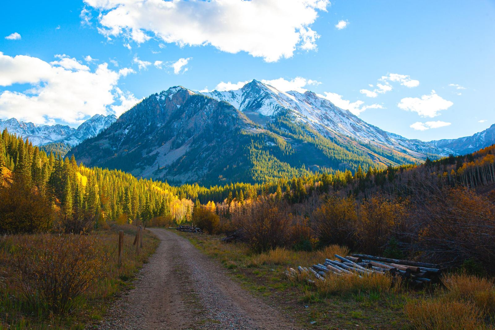

From Aspen and Beyond
A weekly field guide to what's on — music, art, and high-country happenings, verified before publication.

Ways to play in Aspen and the Roaring Fork Valley — deep guides, verified against official sources, built for concierge recommendations and curious visitors alike.